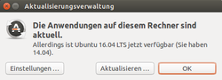
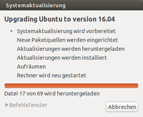
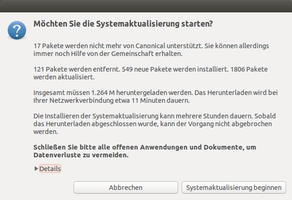
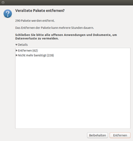

Upgrade Trusty auf Xenial
Dieser Artikel wurde für die folgenden Ubuntu-Versionen getestet:
Ubuntu 14.04 Trusty Tahr
Zum Verständnis dieses Artikels sind folgende Seiten hilfreich:
Bei "Non-LTS" Ubuntu-Versionen ist ein Upgrade nur auf die nächsthöhere Version möglich. Ein Versionssprung über zwei oder mehrere Versionen ist hingegen nicht vorgesehen. Jedoch gibt es mit dem "Distribution-Upgrade" eine Methode, um von einer LTS- auf die nächste, nachfolgende LTS-Version zu aktualisieren, ohne die drei dazwischen liegenden "Non-LTS" -Versionen installieren zu müssen. Das ist ebenfalls auch für den Versionssprung von Ubuntu 14.04 auf Ubuntu 16.04 vorgesehen, welches mit der Freigabe des ersten Point-Release: 16.04.1 empfohlen wird, vorher aber schon manuell angestoßen werden kann.
Vorbereitung¶
Achtung!
Achtung!
Der Einsatz eines HWE-Stacks kann ein Upgrade unter Umständen beeinflussen. Je nach dem wie ein System mit dem Einsatz von Software aus Fremdquellen vom Standard abweicht, kann dies den Vorgang negativ beeinflussen. Ferner muss beachtet werden, dass zwischen der Freigabe von 14.04. und 16.04. zahlreiche neuere Versionen des Linux-Kernels, Software sowie proprietärer Treiber erschienen sind.
Es kann daher sein, dass die Unterstützung älterer oder exotischer Hardware entfällt. Folglich empfiehlt sich, vor einem Umstieg auf die neue Ubuntu-Version die Kompatibilität zu überprüfen, etwa mit einem Live-Medium. Auch sollte man unbedingt eine Sicherung (Backup) der wichtigsten Daten anlegen.
Zuerst sollte sichergestellt werden, dass das vorhandene System auf dem aktuellen Stand (Updates) ist. Wichtig zudem, dass das Paket
update-manager-core
installiert ist. Anschließend ist das System für das Distributions-Upgrade bereit.
Distributions-Upgrade Standard¶

Bis zum Erscheinen des Point-Release 1 von Ubuntu 16.04 muss der Upgrade-Vorgang manuell via Terminal gestartet werden[3][4]:
sudo update-manager --proposed
Die Option --proposed sorgt dafür, dass die zuletzt verfügbare (also aktuelle) Version genutzt wird. Es erscheint die Meldung:
Neue Version 16.04 der Distribution ist verfügbar
|  |
| Systemaktualisierung: Vorbereitung |
|  |
| Systemaktualisierung: Starten |
|  |
| Systemaktualisierung: Aufräumen |
Das Distribution-Upgrade beginnt man mit einem Klick auf "Aktualisieren", das System wird nun untersucht und vorbereitet. Es werden alle vorhanden Trusty-Paketquellen deaktiviert. Manche Pakete sind mit der neuen Ubuntu-Version nicht mehr kompatibel (das betrifft Pakete, die aus fremden Quellen installiert wurden, sowie Pakete die durch andere ersetzt wurden oder inzwischen überflüssig sind). Diese Änderungen kann man sich detailliert auflisten lassen, um zu prüfen was nach dem Upgrade-Vorgang an Paketen wieder ersetzt werden muss.
Nach dem Schließen aller geöffneten Anwendungen geht es weiter mit "Systemaktualisierung beginnen". Der damit gestartete Vorgang darf nicht mehr unterbrochen werden. Je nach Geschwindigkeit der Internetverbindung kann das Herunterladen der Pakete länger dauern. Der nachfolgende Installationsprozess sollte aufmerksam verfolgt werden, weil es an einigen Stellen gegebenenfalls zu Abfragen kommen kann, die korrigiert oder bestätigt werden müssen. Insbesondere kann es sein, dass Konfigurationsdateien manuell ausgewählt oder geändert werden müssen.
Ist der Upgrade-Prozeß beendet und alle Pakete installiert, können unter dem Menü-Punkt: "Aufräumen" alte, nicht mehr benötigte Software-Pakete und -Bibliotheken bereinigt werden. Es ist ratsam, genau zu prüfen, welche gelöscht werden sollen oder eventuell noch gebraucht werden.
Ist dies ebenfalls beendet, muss das System noch "neu gestartet" werden. Damit ist die eigentliche Installation schon abgeschlossen; eine letzte Überprüfung kann nun noch folgen. Eine Kontrolle ob alle Programme, die in der Vorgängerversion manuell installiert wurden fehlen, ist sinnvoll. Diese können bei Bedarf wieder neu installiert werden.
Im Zuge des Upgrade-Vorgangs werden vorhandene Paketquellen in der Datei sources.list automatisch bearbeitet (umbenennen von trusty in xenial), sowie vorhandene Fremdquellen deaktiviert. Damit ist gewährleistet, dass Xenial künftig aktuell gehalten werden kann ("update"). Eventuell vorhandene und nötige Fremdquellen müssen kontrolliert, korrigiert und gegebenenfalls wieder aktiviert werden.
Upgrade der Ubuntu-Server-Variante¶
Der Upgrade-Vorgang wird mit folgendem Befehl gestartet:
sudo do-release-upgrade
Ab jetzt muss man nur noch den Anweisungen auf dem Bildschirm folgen. Vorsicht ist angesagt, wenn Meldungen kommen, die die Konfigurationen einzelner Dienste bzw. Programme ändern. Man sollte jede Konfiguration einzeln prüfen und entweder die neue Version akzeptieren oder die eigene Version der Konfigurationsdatei behalten. Man informiert sich am besten vorher mit Hilfe der Ubuntu Release Notes  , welche Änderungen an den Paketen beim Distributions-Upgrade durchgeführt werden.
, welche Änderungen an den Paketen beim Distributions-Upgrade durchgeführt werden.
Problembehebung¶
Verschlüsselte Systeme¶
Ein sehr häufiger Grund für ein Scheitern des Upgrade-Vorgangs bei vollverschlüsselten Systemen ist eine zu kleine /boot-Partition. Man sollte daher vorher unbedingt prüfen, ob mindestens 100 MiB freier Speicherplatz auf dieser Partition zur Verfügung stehen. Wenn keine separate Partition für /boot vorhanden ist, tritt das Problem im Regelfall nicht auf.
Links¶
Upgrade - Hauptartikel
update-manager
- Dokumentation der verfügbaren OptionenRelease Notes
zu Ubuntu 16.04 (Desktop, Server)
- Erstellt mit Inyoka
-
 2004 – 2017 ubuntuusers.de • Einige Rechte vorbehalten
2004 – 2017 ubuntuusers.de • Einige Rechte vorbehalten
Lizenz • Kontakt • Datenschutz • Impressum • Serverstatus -
Serverhousing gespendet von